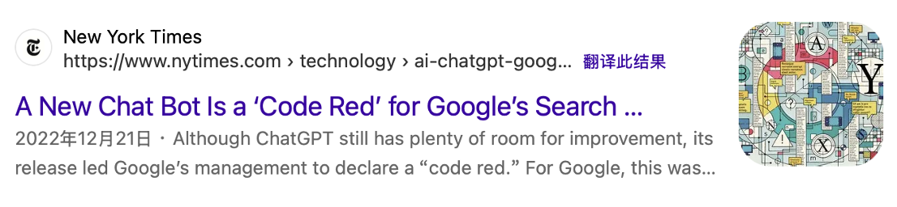
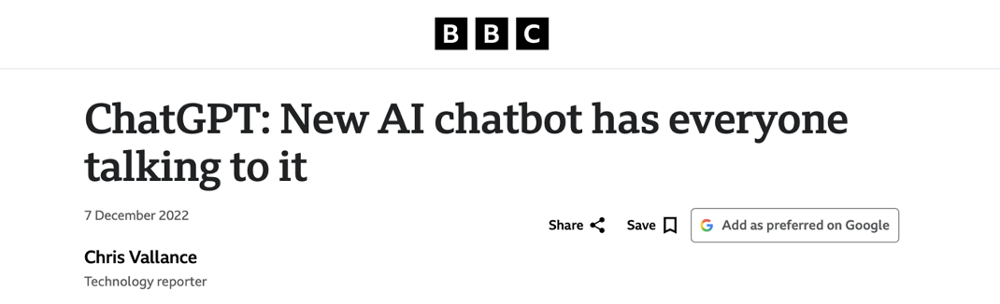
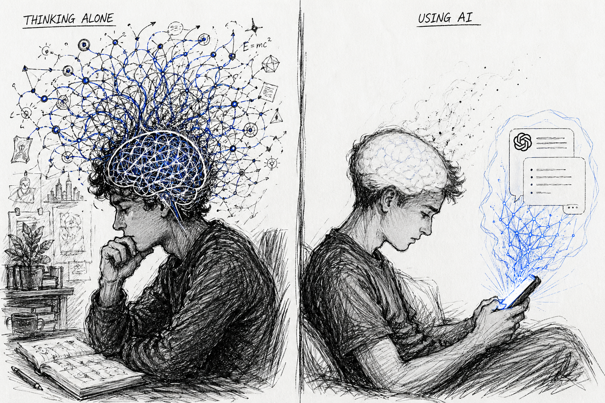

AI begins to “see”
2012
AlexNet
AI surpasses humans in recognizing images, but still does not truly understand what it sees.
Before ChatGPT, Wang Yifan wrote every line of code herself. She had to wake up every four hours to check on her models, then do it again the next night.
When Yifan and her peers first entered college, AI wasn't yet a thing. They stood at a familiar crossroads: pick a major, learn the skills, follow the plan.
On November 30, 2022, OpenAI launched ChatGPT. Within two months, it had 100 million users. Faster than TikTok. Faster than Instagram.
Then everything changed. The ground shifted beneath their feet.
It is no longer a surprise that AI has become part of university students' lives right now.
According to the latest 2025 data, 66% of people use AI regularly. Among all age groups, younger demographics have embraced AI tools with remarkable enthusiasm: 76% of adults aged 18–29 have used AI tools, compared to just 6% of those 65 and older. On university campuses, over 80% of students have used AI in their everyday lives, according to the Chegg Global Student Survey.
Globally, the numbers vary by country. The United States has the largest absolute user base: 179 million active users. China presents a unique case, with 250 million users on domestic platforms like Quark AI and DeepSeek, operating in a separate ecosystem due to ChatGPT being blocked.
This is the story of the first AI-native generation in college: students who came of age as artificial intelligence shifted from a tool into an environment. Around them, the conversation is loud and unsettled: the concern of controlling, the fear of replacing, and the excitement of adapting. The impact of AI brings an ever-present uncertainty. How do these first AI-native young people respond? How do they cope? Through their voices, one generation captures an age.
“It felt like the Industrial Revolution. The way we learn has been completely reshaped.”Yifan
Yifan graduated from Fudan University with a degree in Information Security and is now a graduate student in Artificial Intelligence at the University of Hong Kong. When she started college, ChatGPT did not exist.
In her freshman year, she found learning neural networks as a “painful” experience.
“The level of uncertainty is so huge,” said Yifan. When conducting data analysis, she cannot have absolute control over the results of the experiment as in ordinary computer languages. Each time, the outcome can suddenly improve or deteriorate.
“I have to wake up every four hours to check the results. If the results are bad, you need to adjust the parameters and run it again. So at that time, I hate it,” she said.
Back then, AI had no “Chat”, there is only a “black box.” There were too many parameters for humans to understand. During training, the model could “explode” or “vanish” at any moment. “Everything would be going fine for a few moments, and suddenly it would just blow up. No one knew why.” That’s why everyone called it “alchemy（炼丹）.”
On November 30, 2022, OpenAI publicly launched ChatGPT, a chatbot free for everyone.
Built on GPT-3.5, it wasn’t just a simple “chat program.” It was the first generative AI that could converse naturally in everyday language and actually help with real-world tasks. It could handle multi-turn dialogues, answer questions precisely, and generate code, emails, essays, novels—almost any text-based task you threw at it.
Within days, the servers were overwhelmed. Screenshots of AI-written essays, AI-generated code, and AI-scripted dramas flooded social media. Two months later, ChatGPT had surpassed 100 million monthly active users—faster than TikTok, faster than Instagram. The fastest in internet history.
For the general public, it felt like technology had suddenly crashed into everyday life. Some had it write love poems. Others asked for cover letters. Many just copied and pasted their coding problems and let AI fix them. For the first time, people realized that by simply stating what you wanted, the machine could create something coherent on its own. Excitement, but also a quiet unease.
Tech giants were shaken. Google declared a “code red” internal response. Soon after, Microsoft announced a $10 billion investment in OpenAI. Headlines blared: “Will ChatGPT Kill Google Search?” and “AI Will Change the Entire Internet.”


Linda Lam graduated from Hong Kong Baptist University with a degree in English Language Education. At the end of 2022, right after ChatGPT first launched, she got access through a university-provided overseas account, making her one of the very first users.
“At the time, you still needed U.S. IP verification. It only became widely available later with Poe.” The first time she used it, she just chatted with it for fun. Only later did she start feeding it her homework.
She pasted a question into ChatGPT, and the answer it gave back was 80 to 90 percent accurate, enough to get a B+ and get by. Especially for general education assignments: short form and long form answers, even short essays. Before, she had to slowly search for information and piece things together. Now, she just threw the question in, and the answer came out. AI was so much faster.
The first time she saw what AI could generate, one thought crossed her mind: “All those homework assignments I used to do, they feel so meaningless now. There’s no point in keeping them. AI can do all of it anyway.”
What felt even more absurd to her was class group discussion. “Discussing with AI,” she says, “is more productive than discussing with them. They don’t know as much as AI does.”
Excited, she ran to recommend it to her classmates. No one believed her.
“They not only doubted the AI, they doubted me,” Linda says with a smile. “Some people even looked down on me for asking AI everything, saying I wasn’t using my brain.”
“Honestly, I had my doubts too when I first encountered something new.” When she first heard about ChatGPT, her immediate reaction wasn’t “this is going to change the world.” It was, “Another shiny but useless thing.”
What they didn’t know was that an era had already turned. It’s just that most people were still living on the last page.
“I feel like I’m being lifted by AI. It has become my external brain.”Remi Liang
When Remi Liang started university as a sophomore in 2023, she thought AI was “pretty dumb.”
She is a senior at Hong Kong Baptist University, studying data and media communication.
“Back then, AI just felt like an idiot. No deep-thinking mode, and it couldn't even meet the requirements,” Remi recalls. “Writing assignments was still painful. For a 1,000-word essay, I would stay the library for one week.”
In early 2023, Hong Kong's universities embarked on a sharp policy reversal regarding AI tools. The University of Hong Kong led the initial caution by becoming the first in the city to publicly ban ChatGPT in February, citing concerns over academic integrity.
But just months later, HKU’s Senate endorsed a generative AI policy in June 2023, declaring AI literacy the “fifth literacy” that students must possess alongside reading, writing, numeracy, and critical thinking. That summer, other Hong Kong universities also moved from restriction toward permission or limited approval, including HKUST, HKBU, Lingnan University, and so on.
For Remi, the moment her life began to reshape, didn't come from the university announcement. It came from a class assignment.
“Wow! Things that used to take me this long suddenly got done so fast.”
The first time Remi truly realized what AI could do was during a marketing class project. She needed to create a set of campaign visuals for the Hong Kong Guide Dogs Association. “It was way too complicated. We didn't have dogs, and we would have had to hire actors,” she says. “So I chose to use AI.”
She used Midjourney to generate a dozen images. The result was impressive. “That was my real wow moment.” For just a few dollars, buying access via Taobao, she replaced hiring actors, renting equipment, and post-production. Both cost and time were compressed to the extreme.

Launched in 2022 on Discord by David Holz, Midjourney turns simple text prompts into stunning, artistic images and was already a go-to by then. In 2024, Midjourney generates 12 million images per day, and its users grew from 16 million in 2023 to over 19 million on Discord, and generated $300 million in revenue.
2024 also happened to be a year of technological leaps. In February, OpenAI released Sora for video generation; in March, Adobe launched Firefly for design workflows; in June, Apple unveiled Intelligence for Siri translation, photo editing, and math solving.
Top model performance is converging, with 4 companies now clustered within 25 Elo points (inspired by chess ratings) when rated against one another by human voting in the Arena Leaderboard and benchmark. As of March 2026, Anthropic (1,503), xAI (1,495), Google (1,494), OpenAI (1,481), Alibaba (1,449), and DeepSeek (1,424) all occupy the top tier of the Arena Elo ratings, shifting competitive pressure toward cost, reliability, and domain-specific performance.
People use AI for far more than homework. Surveys show top uses include responding to emails/texts (45%), financial questions (43%), and travel planning (38%) from National University data, plus creative writing (21%) and work tasks (15%) per Master of Code.
That was the world Yifan knew. But the technology had been quietly building for years.
AI does not progress in a straight line — it crosses human-level thresholds in different domains, one by one.
AI begins to “see”
AI surpasses humans in recognizing images, but still does not truly understand what it sees.
AI becomes scalable
Introduces the foundation for modern AI systems, making large-scale learning possible but not yet intelligent.
AI begins to understand language
Greatly improves how AI understands language and meaning, though it still cannot generate or reason well.
AI starts to write
Handles a wide range of language tasks at a near human level, but often lacks reasoning and makes mistakes.
AI enters everyday life
Brings human-like conversation to the public, even as it remains unreliable at times.
AI begins to simulate the world
Moves closer to human-level perception across text, images, and video, though it still struggles with consistency.
AI enters cognitive work
Shows strong performance in complex reasoning like math and science, but remains imperfect and resource-intensive.
AI begins to act
Takes steps toward completing tasks autonomously instead of just answering questions, though still unstable.
Humans begin managing AI systems
Shifts from standalone models to integrated systems handling longer, more complex tasks, with uncertainty still unresolved.
AI also went from being a tool to being around Remi’s life.
First, AI moved into her assignments. Essays that took a week now took two evenings. “I'm not constantly on edge anymore,” she says. “Starting something became easier.”
Then it moved into her workflow. AI began generating paragraphs, organizing multiple documents, and mimicking specific writing styles.
Then it moved into her emotions. When she feels overwhelmed, she turns to AI for calm, rational answers instead of burdening her friends late at night.
Finally, it moved into her family. This past Spring Festival, she recommended AI to her mom. Her mom asked, “Can you guess how old I am?” The AI responded with sweet, flattering things.
Remi now calls AI her “external brain”.
“It has saved me an enormous amount of time. Now I can spend that time doing what I actually want, working out, cleaning, watching movies. I never would have imagined that before,” she says. “I used to think AI was dumb. No way I'd confide in it. But now?”
“It gives me moments when I feel truly alive.”
Unlike Remi, Tina was anxious at first.
Tina is a Ph.D. student at the Chinese University of Hong Kong, working in medical data analysis. “Writing code and running pipelines, that's the kind of thing that's easiest to automate,” she says. Back then, she worried about losing her job.
But AI helped her labmate fill a gap in coding skills. Her labmate had great ideas but weaker hands-on abilities, AI bridged that gap. That's when Tina realized: when execution is no longer the bottleneck, having good ideas becomes critically important.
She started using AI more deeply.
“Discussing things with AI cuts the time I spend searching through information and academic articles. That has really improved my focus,” Tina says. “When I have a research idea, I talk to it. It gives me a plan. Then I evaluate it.”
Before, she wasn't very good at transferring insights from one paper to another. Now, AI shows her how a certain paper's approach could apply to her own work. “That really opens up my mind. Going from 0 to 1 is hard for me. But from 1 to 3? That's easy. AI helps me with that step.”
She feels like she has become the “captain of the ship.”
“You have to be the one in control. You can’t just let AI lead you by the nose.”Tina
“If I haven't read other people's work, I can't tell whether what AI wrote is any good.”
She has a “half-glass-of-water” theory: “Some people see that half-empty glass and think, ‘I'm going to be replaced.’ They give up. The other mindset is to use it as a tool. Learn from it. Use it to become better yourself.”
AI does frustrate her sometimes, when writing proposals, it can be vague and grandiose, inventing words, sounding obviously machine-generated. She tells it to lower its tone, to swap out phrases she doesn't like.
But she is no longer anxious about being replaced.
The shift in technology is changing not just how we do things, but seeping inward, rewiring our habits of thought, redefining what ability means, and quietly reshaping our sense of self-worth.
As a junior Applied Math student at Harvard, Burnie Legette began to notice a change. He might be losing the ability to “think”.
In the past, facing a proof problem, he would have pushed himself through every step, scribbling calculations back and forth, spending hours tackling a complex question. But now, whenever his thinking stuck, he would simply open a dialog with ChatGPT.

“I can go through STEM classes and walk away not having learned how to execute much, because I relied on AI for assignments.”
In his proof-based math courses, reasoning used to be the core of the craft. But now, because of AI, he could feel his critical thinking and reasoning abilities are becoming “not as strong as I would like”.
Burnie noticed he wasn't alone. In his math and CS classes, as students were relying on AI tools, professors had observed a significant drop in office hours attendance. In one course, the midterm average fell twenty points from the previous year.
“I think that's partially because people aren't internalizing the information,” said Burnie.
Burnie's concern wasn't unfounded. Multiple studies have shown that generative AI is quietly reshaping how people think.
A 2025 survey from the Higher Education Policy Institute (HEPI) and Kortext found that in higher education, most students use AI for "executive help", such as generating text, summarizing notes, or translating material to gain efficiency with minimal effort rather than for deep conceptual engagement.
Research from the MIT Media Lab pointed in the same direction: students who relied heavily on AI for writing showed significantly lower brain activity and neural connectivity compared to those who completed tasks on their own, suggesting that AI may be reducing the mental effort required for deep thinking.
In that study, 54 students were divided into three groups. One group wrote essays using ChatGPT. Another used only Google search. The third relied on no tools at all, just their own minds. Over three months, each student wrote three 20-minute argumentative essays.
The results were striking. Students who wrote entirely on their own showed the strongest brain activity. Those who used Google search fell in the middle. And the ChatGPT-dependent group showed the weakest brain activity, the more they relied on AI, the less their brains seemed to work.

Burnie felt frustrated and lost.
“I'm not sure it's made me a better writer or a better thinker,” he said. “I think it's better to struggle, do the research, and learn to program from the ground up.”
But while some students had begun to worry about whether they were still thinking, others were facing a deeper question. Not whether their thinking ability had been weakened, but rather, what thinking itself was even for anymore.
At Hong Kong Baptist University, Vishal Ginni, a math major with a minor in FinTech, had once been deeply confident in his own abilities.
Before university, he had already taught himself to code, reading technical documentation and online resources, piecing together his own knowledge base from the ground up. He had joined hackathons, collaborated with CS students on projects.
In his eyes, his understanding of system architecture and his ability to organize code put him ahead of many formally trained CS students. The ability to “see the blueprint” had once been his core advantage.
“Software development is like building with Lego,” he said. “I have the blueprint in my head. I know exactly where each piece goes.”
But as AI tools matured, that advantage began to feel fragile.
In 2025, “vibe coding” became a buzzword in tech circles. It meant using natural language to direct AI to generate code, with developers barely touching the keyboard, just prompting and iterating. A New York Times reporter used AI tools to build a functioning indie game prototype, Meatball Mania, in just a few hours, generating the entire codebase through natural language alone.
That same year, third-party analysis suggested that about 4% of public commits on GitHub could be identified as AI-generated, and the real number was likely higher.
But Ginni hadn't fully embraced AI tools. He still stuck with traditional development environments, maintaining his own codebase. He knew firsthand that large language models still tend to “break” when faced with complex tasks.
And yet, he had to admit: the amount of code he wrote by hand was shrinking. Faced with a feature, he would ask himself: Is it worth writing this myself? Or should I just let AI generate it and move faster?
“Before, I could proudly call myself a software engineer, and a good developer meant someone who knew the syntax, who had written a lot of code,” he said. “But now, practically anyone can say that. People are starting to question whether memorizing any of these codes even matters anymore.”
For years, being a “developer” meant something. It meant you had put in the hours, struggled through the bugs, earned the right to call yourself a builder. But now that title felt up for grabs. Anyone with a ChatGPT account could claim it. And even if the quality was different, the distinction no longer seemed to matter to the outside world.
That realization was uncomfortable. But what came next was worse.
If being a developer no longer meant what it used to, then what did it mean? And if the world no longer needed him to write every line of code, then what was he supposed to do with his skills?
In February 2026, Anthropic released an 18-page report stating that software development is undergoing its largest paradigm shift since the graphical user interface.
The report's core conclusion shook the industry: anyone can become a developer. Programming is no longer just for professionals. Employees from legal, marketing, and operations can now build software with AI agents. The barrier is collapsing.
Programmers are being redefined. Building software no longer means writing code. Engineers are shifting from “coders” to “conductors”, evaluating AI output, providing direction, and ensuring the right problems get solved. Anthropic calls this new role the “AI conductor.” Those who only code are being phased out, while those with architectural and strategic skills are becoming more competitive.
“I know how to build things. But I don’t know what to build anymore.”Vishal Ginni
In his mind, development had always been about solving problems. But when he started seriously looking for problems, he found that most needs were already met, or weren't really valuable to begin with. A lot of projects looked “cool,” but would anyone actually pay for them? Would anyone truly miss them?
“People pay for things they can't live without,” he said. “Like the internet. Like ChatGPT now. But a lot of what we build, it's not that.”

He didn't want to manufacture false necessity, to convince people through marketing and packaging that they needed something they didn't. That made the question of what to build far harder than how to build it.
In an era where generative AI can already generate code, spin up prototypes, and even handle basic product design, the barrier to building has collapsed. An idea can become a working app in days, only to be abandoned or replaced just as quickly.
“We can make something really fast now,” he said. “But then what?”
The industry heard that voice.
Marc Hamilton, Vice President of Solutions Architecture and Engineering at NVIDIA, said during HKBU-NVIDIA Joint AI Laboratory International Symposium. “Please, keep studying computer science,” he said. “No AI is going to say, ‘Please write the AI code for the next chip.’ That won't happen within the students' lifetimes.”
But Hamilton also acknowledged that the role of software engineers is shifting. “The job for many computer scientists was to work with other experts to write the software for them,” he said. “Now, for the first time in history, anyone can write software. The role is shifting to ‘whether you understand the system.’”
He offered an analogy: “It's like an airplane. A lot of it is on autopilot, but you always need a pilot. You need a human's fast thinking and reaction skills to steer to safety.”
After the struggle of being lost, not everyone arrived at the same answer.
Some chose to resist. Some chose to embrace. Most fell somewhere in between, still figuring out where to stand.
Norah and Elizabeth share the same fear. They are the firm rejectors of AI.
At Emerson College, there is an unwritten rule.
“People don’t want to admit they use AI because it’s embarrassing,” said Norah, a junior majoring in Journalism. “Especially at Emerson where it’s so creative-heavy.”

She told a story about a girl who joked about using ChatGPT to write an essay. The whole room went silent. No one laughed.
“It’s like a ‘badge of honor’ here to do things yourself and preserve your ability to think critically,” she said.
Norah is a writer. She stays away from AI. “It’s a little scary to me that AI can have a ‘human voice’ and create art. The process of writing and making art is so important to me and to many people. It scares me that the process can be shortened in that way.”
She also worries about copyright. Her work is published online. “AI could scrape my work from anywhere, even the stories I wrote for journalism class. It’s weird and scary that someone could ask AI to ‘show me something Norah wrote’ and it could just pull it.”
Since ChatGPT launched in November 2022, many companies have explored publishing content generated by LLMs such as ChatGPT, Claude, and Gemini to grow their traffic across channels such as Google Search, social, and advertising. This is a cost-effective alternative to spending hundreds of dollars for humans to write content.
Starting from a point where humans produced almost all digital material, the landscape began to change rapidly as AI-generated content saw a massive surge starting in 2023. Over the same period, the share of content created by people steadily dropped. By early 2025, these two trends officially crossed, with AI-generated work now making up 51.7% of the total, surpassing human-made content for the first time.
“I feel proud of myself when I go through the actual process of doing the work. If I asked AI to do it, I wouldn't learn anything. College is expensive; I’m paying to be here to gain these skills, even if AI takes over some of them later,” said Norah.
Elizabeth, a second-year student at NYU studying Forensic Psychology, shares the same resistance. She stopped using AI at the beginning of her second year. “I realized I was relying on it too much. I wasn’t using my full ability to write or develop my own ideas.”
Art has always been a big part of her life. She has been drawing since she was little. “AI damages artists by taking their unique styles and recreating them. This often leads to situations where people are accused of using AI for work they actually hand-drew themselves.”
She has seen artists leave Twitter after the platform enabled AI training on every post. “It’s sad because so much art was fed into AI without the artists’ consent. Most people can’t tell the difference, so they naturally favor AI because it can produce ‘difficult’ images in seconds without the need to commission a human.”
But her deepest concern is environment. She learned about “environmental racism” in a science course. “In Memphis, Tennessee, neighbors around a data center have reported that they can no longer open their windows because the air has become so toxic. I feel that as AI grows, conditions will only get worse for people in low-income areas.”
While Norah and Elizabeth turn away from AI, Linda Lam ran straight toward it. She turned it into a business.
Her logic was simple: most people don't know how to write prompts. That's an opportunity.
Linda grew up without internet or mobile phones before college, relying on printed reference books. For exams, she memorized "canned phrases" from sample essays. Now she sees AI as a booster. "Knowing how to use AI is itself an advantage," she says.
In her senior year at Hong Kong Baptist University, she co-founded Greypad, an AI platform that grades DSE Chinese composition papers. Students take a photo of their handwritten essay; the AI grades it and generates an upgraded version. The platform now has over 1,800 regular users. She received 30,000 HKD in startup funding and entered Hong Kong's Science Park.
"Many students coming from the mainland don't have this AI awareness," she says. "Mastering AI means mastering 60 percent of the initiative in learning."
She knows AI's limits. "AI's error rate is between 10 and 20 percent, but the margin for error in the workplace might be only 1 percent. AI hallucinates. It can't replace rigorous work." Still, she has a clear timeline: five to ten years of making money with AI, then retirement.
"AI has made me less worried about being employed," she says. "Entrepreneurship makes me busy every day because I have to constantly innovate, it's so much more interesting."
Tina found a way to stop being anxious.
A Ph.D. student at the Chinese University of Hong Kong working in medical data analysis, she initially worried about being replaced. “Writing code and running pipelines—that’s the kind of thing that’s easiest to automate.”
But then she saw AI help a labmate fill a gap in coding skills. Her labmate had great ideas but weaker hands-on abilities. AI bridged that gap. That’s when Tina realized: when execution is no longer the bottleneck, having good ideas becomes critically important.
She started using AI more deeply. “Discussing things with AI cuts the time I spend searching through information and academic articles. When I have a research idea, I talk to it. It gives me a plan. Then I evaluate it.”
She feels like she has become the “captain of the ship.” “You have to be the one in control. You can’t just let AI lead you by the nose. You have to be able to judge what it writes. If I haven’t read other people’s work, I can’t tell whether what AI wrote is any good.”
Her theory: a half glass of water. “Some people see that half-empty glass and think—‘I’m going to be replaced.’ They give up. The other mindset is to use it as a tool. Learn from it. Use it to become better yourself.”
She is no longer anxious about being replaced.
Not everyone picks a side. Yifan stays in the middle, not resisting, not surrendering, just trying to figure out her own pace.
Yifan doesn’t trust AI, but she uses it. She doesn’t resist the wave, but she refuses to drown in it. Her compromise is a hybrid: manual work with AI assistance. Let the machine handle the grunt work, but keep her own hands on the wheel.
“I’m probably old-school,” she admits. In her eyes, a large language model is just a probability machine. It gets things done, but rarely the way she wants. Still, she knows the wave is unstoppable. “Resist, and you’ll be swept aside.”
So she swims upstream. She lets AI provide convenience, lets it save her brain for the hard problems. But she also holds something back. “If you don’t turn yourself into a pure tool-user, you won’t feel the crisis of being replaced.”
That is her line. She still holds onto the human part: the messy thinking, the slow struggle, the things AI cannot feel for her.
“Don’t reject it,” she says. “Embrace it. Use it. Feel it. Even panic, that’s a real feeling too.”
While students wrestled with their own choices, the world outside campus was watching. And it had its own answers.
Caridee, an HR professional in Hong Kong, saw the shift in real time. Companies had started using AI for keyword matching, preferring exact matches over people with potential. The line between technical and non-technical roles was blurring. At startups, business people were using AI to write code, and technical founders were using AI to analyze markets.
“Don’t be too optimistic, but don’t be too pessimistic either,” she said. “Use AI to focus on what you truly value.”
Marc Hamilton, Vice President at NVIDIA, offered reassurance. “Please, keep studying computer science,” he said. “No AI is going to say, ‘Please write the AI code for the next chip.’ That won’t happen within the students’ lifetimes.”
But he also acknowledged the shift. “The job for many computer scientists was to work with other experts to write the software for them. Now, for the first time in history, anyone can write software. The role is shifting to whether you understand the system.” He offered an analogy: a plane on autopilot still needs a pilot. “You need a human’s fast thinking and reaction skills to steer to safety.”
Randy Harrison, a professor at Emerson College, had been thinking about this longer than most. The day after ChatGPT launched, he had his students try it. Some were scared. But he pushed forward.
For Randy, “to use or not to use” was never the real question. The real question was how to use it. He distinguishes between two ways. One is taking shortcuts, letting AI do the thinking that should come from your own mind. “That’s a mistake. If you use it to replace your gifts, you just get AI slop.” The other is using AI to support and amplify your gifts. “You have to be under your own control, not the tool’s control. The more you put in, the more you get out.”
Then there was Phili. He was an old school programmer, the kind who had been writing code since before most of today’s students were born. When others drew a clean line between “humans do architecture, AI does execution,” he just shook his head.
“I feel sorry for people who think that way,” he said.
He had already started discussing architecture with AI, letting it give him advice. “AI’s knowledge goes beyond my range.” The real skill that mattered now wasn’t something you learned from a book. It was the ability to manage someone, or something, that was better than you in every way.
His advice was simple and direct. “Try to use AI to replace yourself. Go all in. At least 20 percent of your work should be AI driven. Let AI understand your priorities. Learning to manage AI is the direction we need to move in.”
Three voices. One from HR. One from the industry. One from the old school. They didn’t agree on everything, but they all said the same thing: the students could not afford to stand still.
Yifan questioned: “With AI growing exponentially, where is the boundary? Which jobs will disappear entirely?”
She doesn’t know where her own future will go. But she didn’t stop, waiting for a clear map. She kept going, exploring, and venturing, believes that she will find her direction.
The wave came for her. It came for all of them. And it was not done yet.
During my final semester of university, I sat down with a group of first year students and we started talking about the English course we all took as freshmen. I told them that back in my first year, AI did not exist yet. They stared at me, eyes wide with disbelief. “You sound like you're from the last century,” one of them said. “How did you even learn college English without AI?”
We laughed and joked about how different our college experiences had been. But as I laughed, a realization began to sink in: we might be the first generation of students to have AI on campus, and also the last generation to have gone through college without it.
Later, while writing HTML code for the website, I tried Codex, the desktop AI coding assistant from ChatGPT, for the first time. It generated a perfect code, but without any warning, it altered every file on my desktop, including the backup copies of my original source code. I searched through my folders, but the original files were gone. Cold sweat broke out on my forehead. In that moment, I felt for the first time that AI had crossed a line. It was also the first time I truly understood how deeply significant the changes brought by AI could be.
For today's incoming students, letting AI modify files or take control of a computer might not seem unusual. But for someone like me, someone who feels like they come from the last century, the feeling was unlike anything I had felt before. It sent a chill down my spine.
In just four short years, the AI era had stretched to a length that already felt like a century.